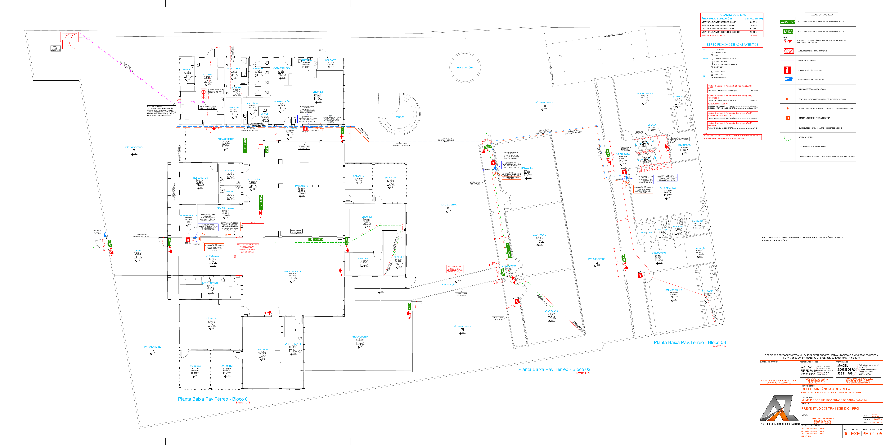

Reportagem transmídia · Saudades (SC)
Explore os pontos do mapa para conhecer os acontecimentos e seus contextos. O conteúdo editorial deve ser preenchido a partir da apuração da reportagem.
Documento arquitetônico e reconstrução histórica
Selecione a versão para consultar a planta e a diferença histórica informada para este projeto.

Fonte da planta-base: arquivo “PROJETO CEI AQUARELA 4”, página 59. A versão de 2021 é uma reconstrução editorial baseada na informação fornecida para este infográfico; não é uma planta histórica original. Clique na imagem para ampliar/reduzir e arraste a área ampliada para examinar detalhes.